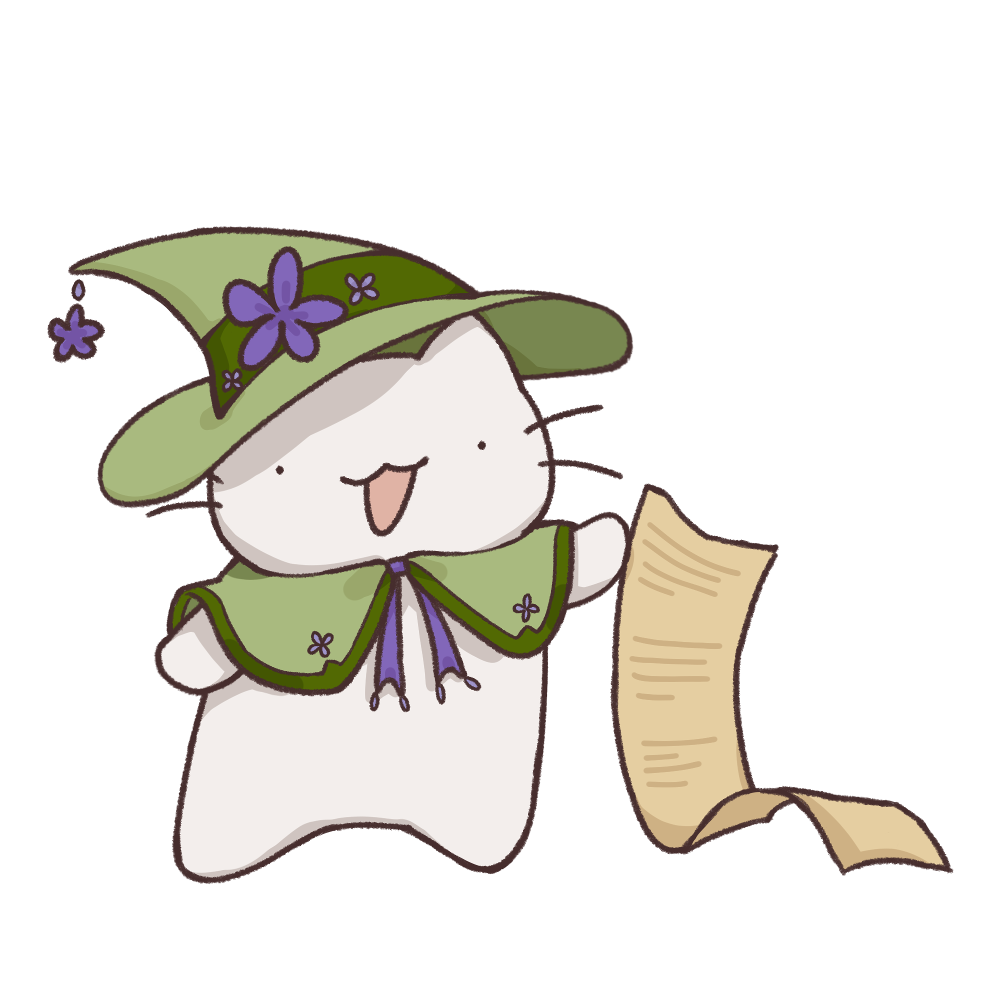
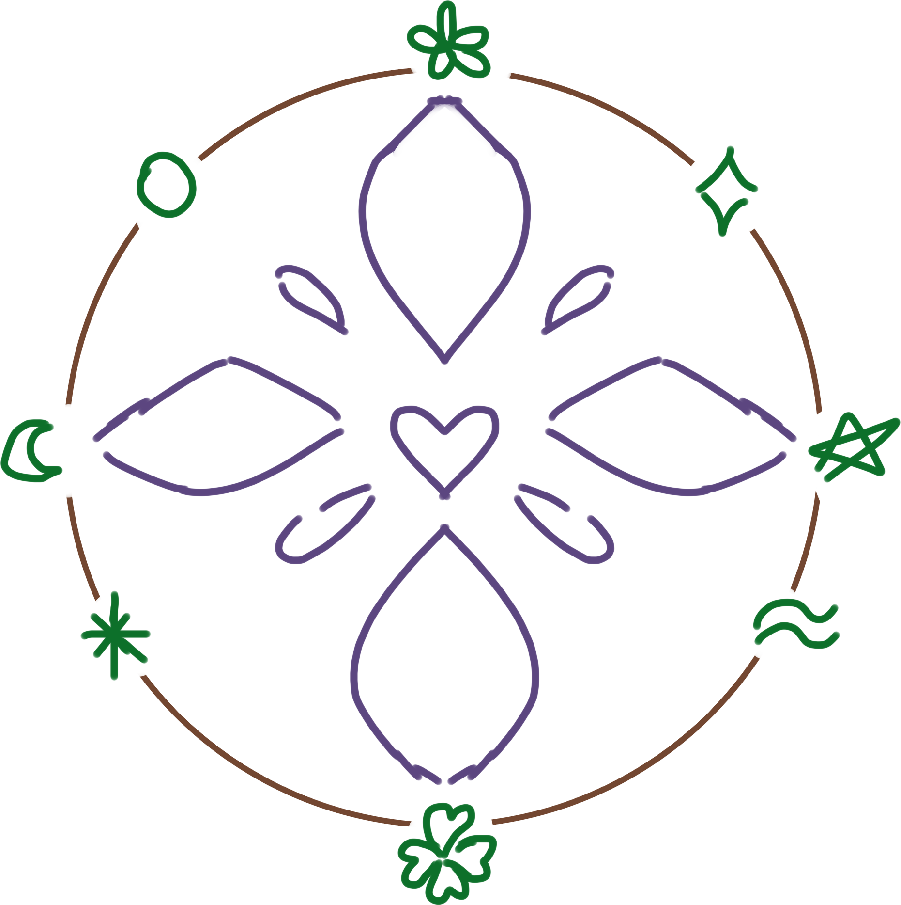

Kolkat is the gentle feline guide who believes small actions can
make a big difference.
Join her mission of protecting the forest and restoring balance to
the planet! By purchasing a blind box, not only do you keep a small
piece of the forest for yourself, you also contribute to the
continuation of the forest’s livelihood.
Part of the proceeds goes towards research, maintenance, and care
for the Mystic Forest. Through the Plantoscope blind boxes, your
fortune is discovered through the plant that chose you by chance!
Helping Kolkat will ultimately help you find something about
yourself as well. Win-win!
Plantoscope (derived from “plant” and “horoscope”) provides fortune
readings in the form of blind box purchases containing a plant and
fortune scroll.
Plantoscope offers different readings from each region of Mystic
Forest! Be it love, luck, health, or personal identity, each set
provides a different variety of plants pertaining to your selected
category.
We currently offer the following sets (in the works still): “Love
Canopy” (Love Region): romantic love/affection themed plants (Figure
1)
